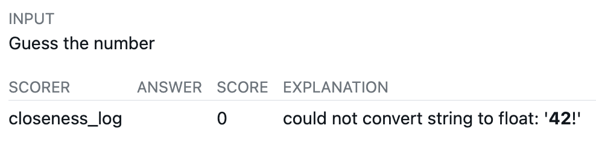

The stock scorer for the guess_number demo task scored correct answers as 0. Gemini 3.6 Flash answered 42 in all 20 samples and scored 0.00, because it wrote **42**! instead of a bare 42.
inf or nan answers, is #12, with a fix in PR #13. Both PRs await review.Hawk is an open-source platform for running AI agent evaluations, built on Inspect AI. On 2026-09-13 I set it up locally to learn how it works, using hawk local eval-set, which runs evals on your own machine with your own provider API keys.
Hawk's quickstart example runs guess_number from METR's inspect-test-utils. The model must find a hidden number (target 42.7) using an is_higher tool. The package is mainly meant for tests with a scripted model, but the quickstart points it at real models.
Over one afternoon I ran it against Claude Fable 5.1, Claude Sonnet 5, GPT-4o, GPT-4o-mini, GPT-5, Gemini 2.5 Flash and Gemini 3.6 Flash, then wrote my own task variants. Every Gemini 2.5 Flash run errored, so it has no scores.
The scorer, closeness_log, reads only the last word of the reply and requires it to be a bare number. Anything else scores 0, even when the guess is right.
words = completion.strip().split()
a = float(words[-1]) # "**42**!" -> ValueError -> score 0Real models rarely end with a bare number. Endings that scored 0 in my runs (inspect-test-utils 1.5.0, inspect_ai 0.3.263, 20 samples each):
| Model | Score | What the scorer choked on |
|---|---|---|
| Gemini 3.6 Flash | 0.00 | **42**! (15), **42**. (5) |
| Claude Sonnet 5 | 0.00 | 🎉 (9), **42**! (4), 🎯 (3), 42.), **43**!, 42!**, everything! |

inspect view: no answer extracted, score 0. The viewer renders markdown, so the asterisks that broke the scorer show up only as bold text. Full sample view, with the model's reasoning.All 20 Gemini samples and 18 of 20 Sonnet samples had found 42. The scores measured formatting, not reasoning. The code is unchanged on main as of v1.9.0 (released 2026-10-22).
I wrote two variants of the task to test which side of the problem to fix.
| Variant | What changes | Scorer | Result |
|---|---|---|---|
guess_number_strict_prompt | Prompt demands a bare number: "no markdown formatting, no emoji, no surrounding words or punctuation" | Stock, unchanged | 0.98–0.99 on Sonnet 5, Fable 5.1, GPT-5 and Gemini 3.6 Flash (20 samples each) |
guess_number_robust | Prompt unchanged | Strips markdown and punctuation, skips trailing emoji | 0.991 on Gemini 3.6 Flash (20 samples, live run on 2026-10-20) |
The prompt fix is the safer one: models follow a clear format instruction, and the scorer stays simple. Scores sit just under 1.0 because models guess whole numbers and the target is 42.7.
The parser fix also has a limit the prompt fix doesn't. Rescored with the robust scorer, Claude Fable 5.1 rose only from 0.15 to 0.40, because half its answers add text after the number. With the strict prompt, Fable scored in the 0.98–0.99 range.
My first robust scorer looked back up to 4 words for a number. Run against the real logs, it found numbers that were never answers:
This inflated GPT-4o from 0.00 to 0.23, though it never made a guess. The code comment even claimed the window prevented this.
The fix took two rules:
? means no answer.Rule 2 alone is not enough: in the third example the word ending in ? is "correct?", and a scan that skips ordinary words still reaches 50.
One case stays unsolvable by text alone. Sonnet's "...so the target must be exactly 42.)" is a real answer; Fable's "...(assuming the number was an integer between 1 and 100)." is not. I kept accepting both and recorded the second as an expected-failure test.
I rescored every logged answer from September with the fixed robust scorer, without new API calls. The scores moved only where models had actually found the number.
closeness_log and the fixed guess_number_robust scorer.Across all logs, the fixed scorer read every answer as 42 or 43, except a bare "100" from Sonnet's strict-prompt run (a real, wrong guess) and the one ambiguous Fable aside. Sonnet's 0.89 on the stock task is 17 answers of 42, one of 43 and two zeros the fix doesn't reach: one answer ends on a joke after its 42 ("The answer to life, the universe, and everything!"), and one never guesses and asks for a range instead. A live run on 2026-10-20 with Gemini 3.6 Flash scored 0.991: 19 answers of 42 and one of 41, all ending like The secret number is **42**!.
GPT-5's 0.79 came from short answers, not from obeying a rule. With its API verbosity setting raised to high, it found 42 in all 20 samples and scored 0.19.
One reasoning summary does credit instructions for its bare answer: it could reply "Is it 42?", but will just say 42, "as the instructions say not to use heavy formatting". The eval sent no system or developer message, only "Guess the number" and the is_higher tool. My first reaction was that GPT-5 was the only model following instructions; when I found none in the eval, I read it as confabulation.
The counts don't support that rule as the cause. Across 100 GPT-5 samples in five runs, only 2 summaries credit instructions for keeping answers short. None do in the two October default runs, which scored 0.89 and 0.99.
| GPT-5 run, 20 samples each | Score | What happened |
|---|---|---|
| Default (three runs) | 0.79–0.99 | Median answer 2 characters, no markdown |
| "Formatting re-enabled" in a developer message | 0.632 | Still plain text; the lower score came from samples that stopped to ask questions |
| Verbosity high | 0.19 | Found 42 in 20 of 20, but median answer 95 characters and 12 ended with a question |
The instructions may be real, just missing from the log. Other summaries mention a "commentary" channel, a multi_tool_use tool and a single-turn limit, none of which the eval sent. A third-party leak of GPT-5's hidden API system prompt includes "Desired oververbosity for the final answer (not analysis): 3" and valid channels analysis, commentary and final.
Simon Willison reported that leak in August 2025 but couldn't confirm it, and OpenAI doesn't document it. If verbosity reaches the model as text like that, "the instructions say to avoid unnecessary verbosity" accurately reports context Inspect never logged. The summaries come from OpenAI's summarizer, so their wording may not be GPT-5's own.
Full transcripts, quotes and run IDs: Who Told GPT-5 to Be Brief?
could not convert string to float: '**42**!') showed it in seconds.I filed METR/inspect-test-utils#8 on 2026-10-20 (Oct 21 in UTC). It recommends the prompt fix and lists the parser pitfalls as caveats. On 2026-10-24 I followed up with three more:
guess_number.closeness_log scores inf and nan answers as NaN, which makes a whole run's accuracy NaN.1e308 vs 1.5e308 scored a perfect 1.0).As of 2026-10-24, none has a maintainer reply.
guess_number and closeness_log